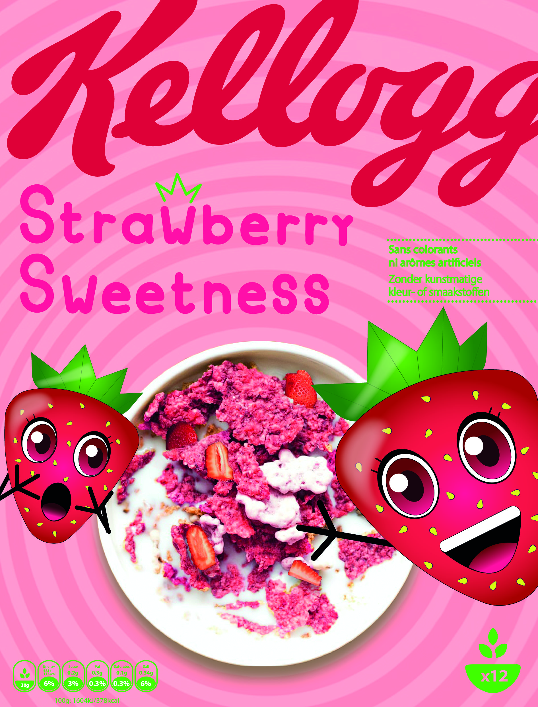

Front of pack- finale versie
De finale versie van de kellogg's cover voor Brand Lab II

Camera tracking
Ik heb een tracking animatie gemaakt op deze clip voor Motion Lab II

Fotoroman deel 1
Het eerste deel van mijn fotoroman voor Interface Lab II

Fotoroman deel 2
Het tweede deel van mijn fotoroman voor Interface Lab II

Moodboard dashboard
Ik heb deze dashboards als inspiratie genomen voor mijn eigen dashboard voor Interface Lab II

Schetsen dashboard
Enkele schetsen van mijn dashboard voor Interface Lab II

Digitale tekening
Een tekening waar ik momenteel aan bezig ben.

Digitale tekening 2
Een tekening van enkele maanden geleden waar ik niet blij mee was. Ik ga ze nog aanpassen.